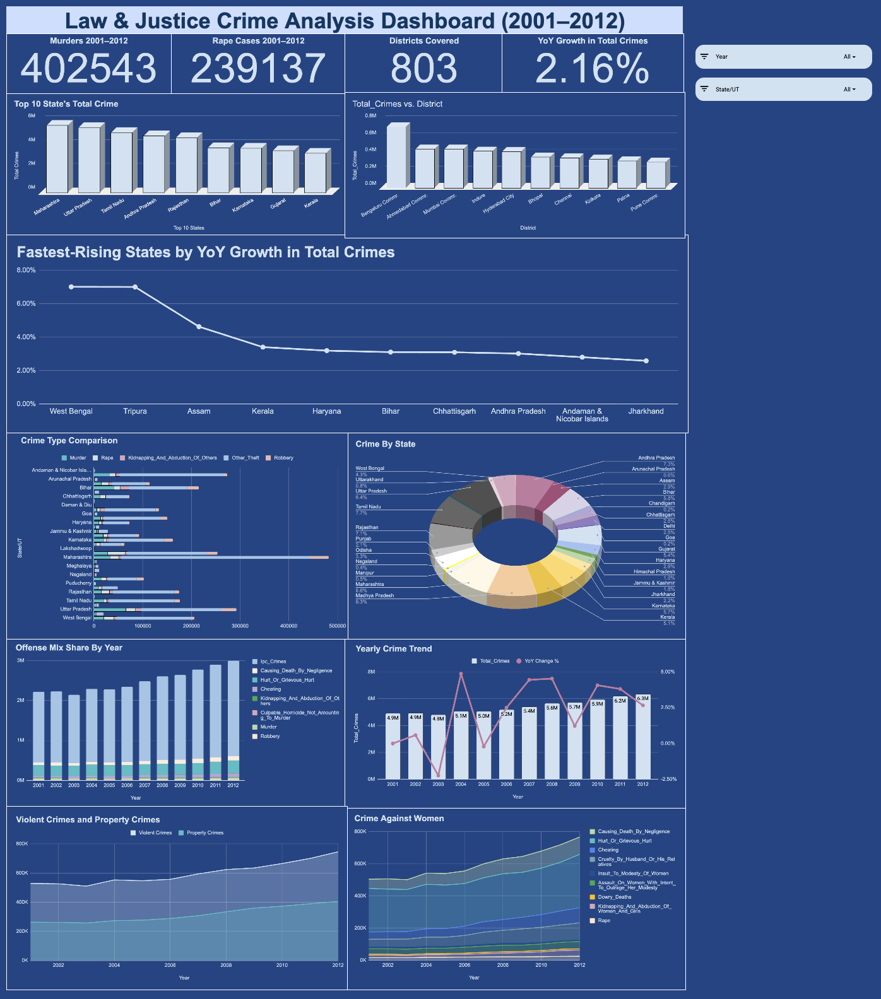
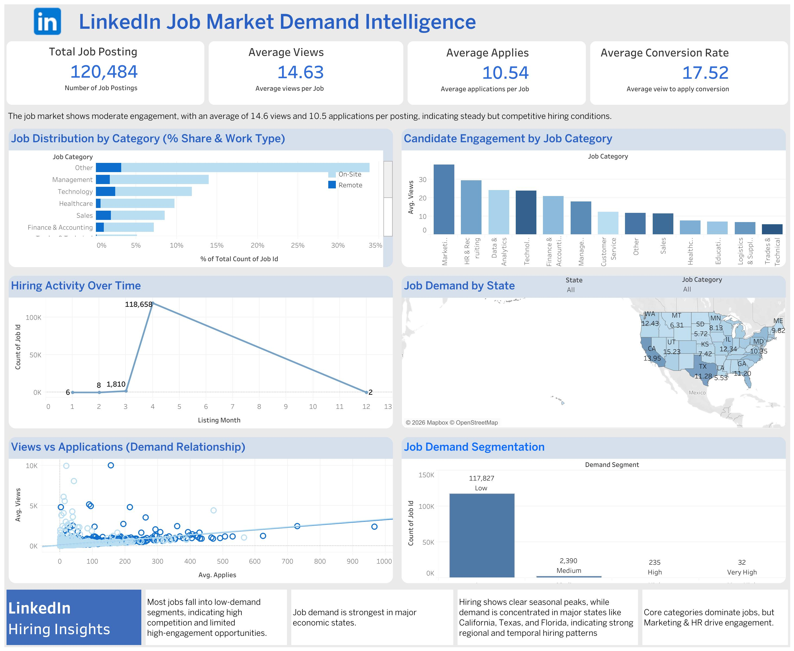

Data Analyst | Dashboard Developer | ETL Builder
View ProjectsI build data-driven dashboards and pipelines that convert raw datasets into actionable insights. Focused on analytics, visualization, and decision support systems.

Built an interactive dashboard analyzing 8,596 records across 803 districts to identify crime trends, hotspots, and growth patterns for data-driven policing.

Developed an ETL pipeline integrating multi-source datasets and performed EDA to uncover job demand, salary trends, and skill insights.
Email: your-email@gmail.com
GitHub: github.com/yourusername
LinkedIn: linkedin.com/in/yourprofile